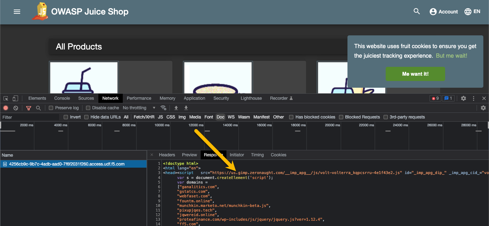

F5 Distributed Cloud Source | Edit on
2. Base Configuration of CSD¶
2.1. Lab 1: Configure CSD and add the JavaScript tag to the web page¶
- Login
Navigate to https://www.f5.com/cloud, select login at the top right and finally select your account type to login.
Note
You can sign up for a free account for the F5 Distributed Cloud in case you don’t have an account yet by following the sign up description or just go directly to the sign up page https://console.ves.volterra.io/signup/usage_plan.

- Enable CSD
Once you logged in, click on “Client-Side Defense”

And enable Client-Side Defense for your tenant. No worries if another user of the same tenant enabled it already.

- Add the JavaScript tag to your web page in UDF by configuring the BIG-IP to include it in the web page response.
Click on “Configuration” and +Add domain to protect

Configure the domain as f5.com then Save & Exit

Click on “Configuration” - “How to Inject JS” and follow step 1 - 3 on the right for adding the JavaScript tag to your webpage between the <head> and </head> tags. Step 5 - 6 is explained below.

Note
The CSD JavaScript should always be the first JavaScript to load on the web page to ensure that the CSD JavaScript can detect any malicious scripts running on the web page.
- Update the Data Group with your JS identifier:
To access the BIG-IP, on the Class UDF screen, click the link for TMUI under the BIG-IP. The username and password is admin / f5DEMOS4u!.

In your BIG-IP TMUI, go to Local Traffic->iRules->Data Group Lists and select the Data Group client_side_defense_js

In the edit screen, first select the row for “access.udf.f5.com” and then click “Edit”

Replace the Value “<REPLACEME>” with the JS you copied from the XC CSD configuration in step 3. It should be one long line of JS, exactly as copied.
Click the “Add” button and then click “Update” at the bottom of the form to save the changes to the Data Group.
Note
The UDF can mess with this test. In all likelihood you will get a failure but with a “true” site you are working with, it should report back with Success.


- Check if the telemetry data are sent to F5.
Start the browser’s DevTools and go to the webpage where you have added the CSD JavaScript tag. Filter in the Dev tools for “Doc”. This indicates that the telemetry data, collected by the JavaScript, are sent to F5.
This shows the JS has been inserted into the page

and this shows that the JS has executed and called back to the F5 Cloud with the required telemetry.